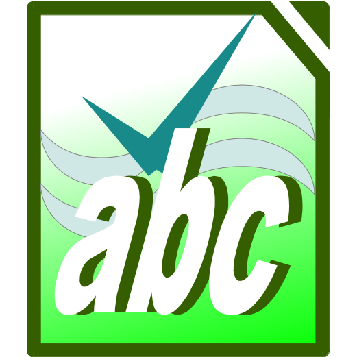
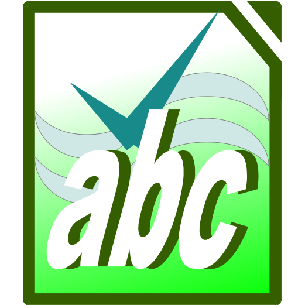

O ABC Online é um projeto da disciplina de Processo de Software 2.
A idéia proposta foi um editor de textos online com verificação gramatical e ortográfica.
Este projeto foi baseado no artigo Rich-Text Editing in Mozilla do MDN. Clique aqui para verificar o artigo.
Este trabalho foi desenvolvido pelo acadêmico Alexandre Vicenzi (vicenzi.alexandre [at] gmail.com).
 without extending any core JavaScript objects.")

 Hunspell

Hunspell
